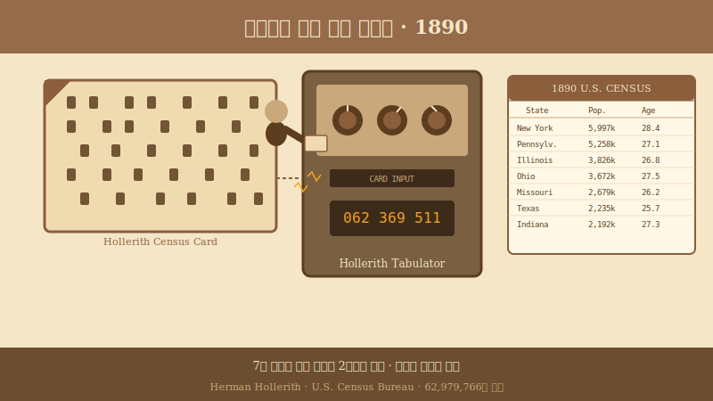

1890
홀러리스 천공 카드 시스템
통계국 서기는 “이번엔 제때 끝낼 수 있을까?”라며 걱정했지만, 허먼 홀러리스의 펀치 카드와 전기 집계기가 기다리던 답을 내놓았습니다.

1880년 미국 정부는 인구조사 결과를 집계하는 데 무려 7년이라는 시간을 썼습니다. 다음 조사가 다가오는데도 이전 결과가 나오지 않자, 통계청은 큰 고민에 빠졌습니다. 이때 허먼 홀러리스라는 발명가가 종이 카드와 전기 집계기를 들고 나타났습니다.
그는 종이 카드에 구멍을 뚫어 사람들의 정보를 기록하고, 기계가 이 구멍을 전기로 읽어 자동으로 숫자를 세도록 만들었습니다. 이 획기적인 발명 덕분에 1890년 인구조사는 단 2년 만에 끝날 수 있었습니다. 인류가 처음으로 방대한 데이터를 기계의 힘을 빌려 처리한 역사적인 순간이었습니다.
천공 카드(Punch Card)는 종이에 뚫린 구멍의 위치로 데이터를 저장하는 방식입니다. 오늘날 우리가 사용하는 엑셀의 행과 열처럼, 카드의 특정 위치가 나이, 성별 등의 정보를 의미했습니다. 기계가 전기를 이용해 이 구멍들을 빠르게 읽어내면서, 수작업으로 하던 계산을 자동화할 수 있었습니다.